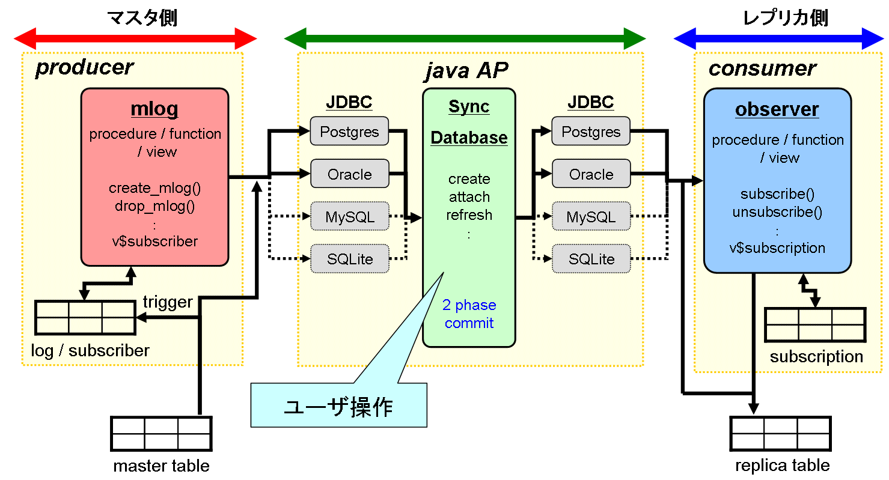
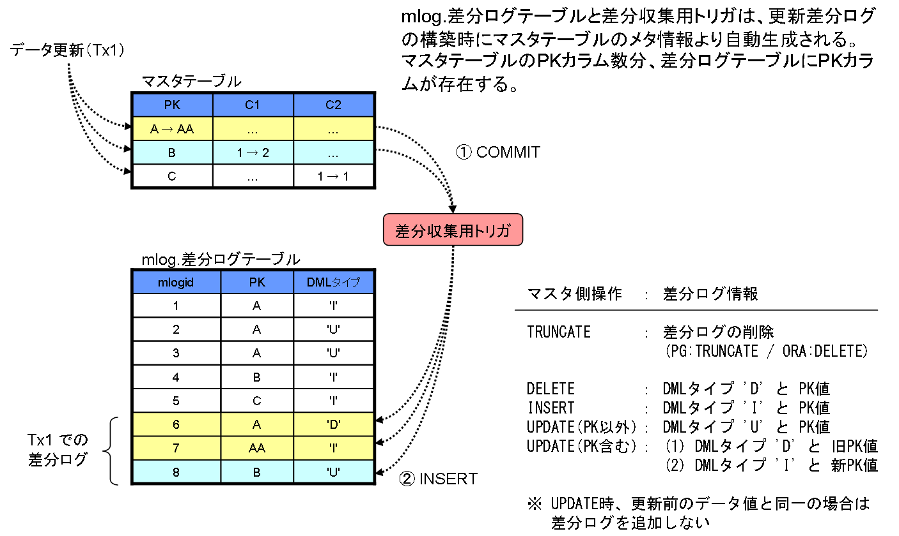
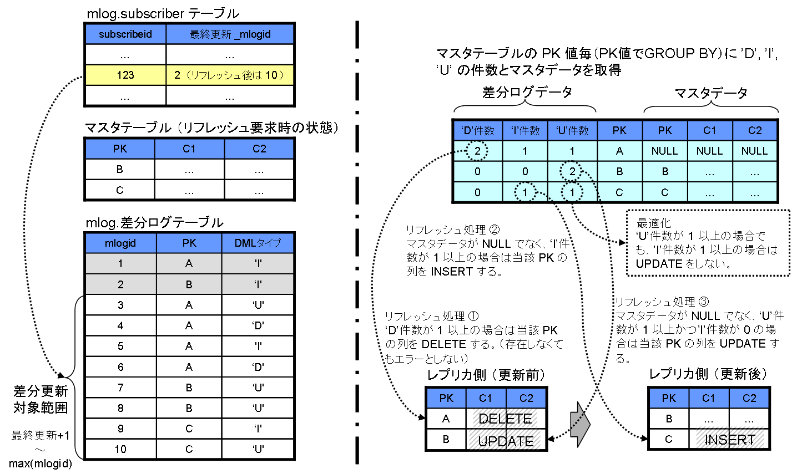
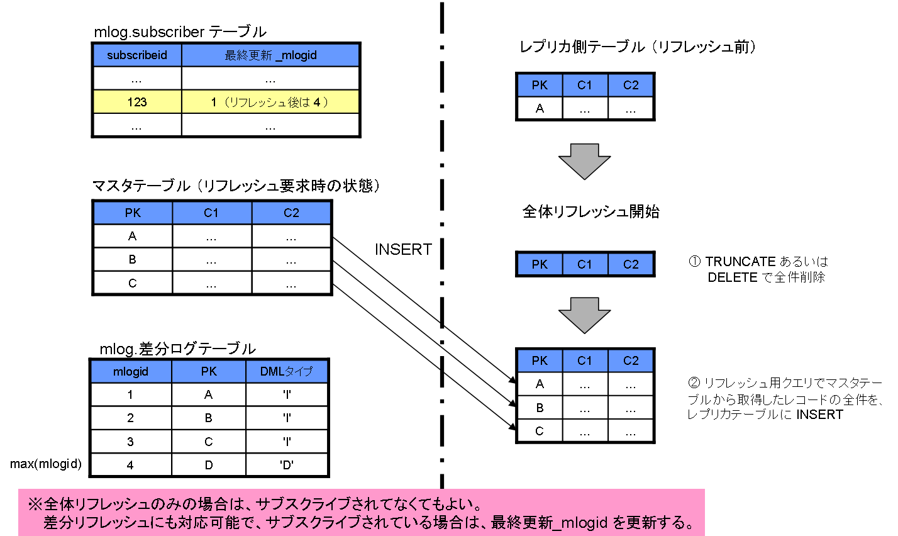
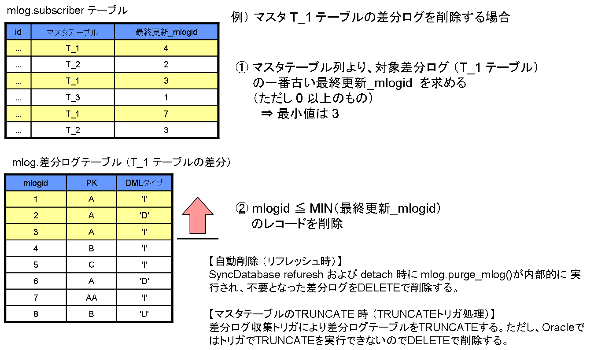

syncdb は、特定のクエリの実行結果を、他のデータベースに保存するためのツールです。 元のデータに変更があった際には、その差分だけを効率よく同期できます。
データの伝播方法として、同期元テーブルに対するクエリ結果の全体を伝播する方式と、同期元テーブルの差分情報のみを伝播する方式の、2つの方式をサポートします。
後者の伝播方式については、同期元となるテーブル中のプライマリキーに基づいて差分情報を収集／適用する方式を採用しているため、更新クエリ自体を差分情報として保持する方式と比べて更新差分の情報量がコンパクトで済み、少量のデータ転送量で同期が可能です。
本ツールは Java で作成されたDBクライアントアプリケーションです。JDBCドライバを利用して同期元テーブルと同期先テーブルにアクセスしますので、Java実行環境と接続先DBMSのJDBCドライバが用意されている環境であれば、どこのホスト上でも実行が可能です。
接続先となるDBMSは、PostgreSQL と Oracle に対応しており、PostgreSQL ⇒ PostgreSQL、PostgreSQL ⇒ Oracle、および Oracle ⇒ PostgreSQL へのデータ伝播機能を提供します。
その他、syncdb には以下の特徴があります。
以下に、本マニュアルで用いる用語の定義を示します。
| 用語 | 説明 |
|---|---|
| マスタテーブル | データ伝播元のテーブル。 |
| レプリカテーブル | データ伝播先のテーブル。 |
| リフレッシュ | マスタテーブルからレプリカテーブルにデータの伝播を実施する処理。 |
| 差分リフレッシュ | マスタテーブルの更新差分ログ情報に基づいたデータ伝播方式。 |
| 全体リフレッシュ | 差分リフレッシュでは伝播効率が悪い場合や、リフレッシュで用いるクエリが複雑なSQLであるため差分リフレッシュ自体が利用不可能な場合に適用される、クエリ結果の全体をコピーするデータ伝播方式。 |
syncdb を利用する上で必要となる主な操作について、以下に示します。
syncdb を使用する上で、分類されるユーザと権限を以下に示します。ユーザは3つに分類されます。
| ユーザ | 操作 | 権限 |
|---|---|---|
| syncdb 管理者 | ・syncdb パッケージのインストール ・syncdb パッケージのアンインストール |
マスタ側サーバおよびレプリカ側サーバに対して「データベース管理者(スーパユーザ)」権限が必要。 |
| マスタテーブル所有者相当 | ・マスタテーブルの更新差分ログ構築 ・マスタテーブルの更新差分ログ削除 (syncdb create/drop) |
マスタテーブルに対して「SELECT」,「TRIGGER」権限が必要。 ※1 |
| syncdb 利用者 | ・レプリカテーブルとマスタテーブルの関連付け ・レプリカテーブルの最新化(リフレッシュ) ・マスタテーブルとの関連付け解除 (syncdb attach/refresh/detach) |
マスタテーブルに対して「SELECT」権限が必要。 レプリカテーブルに対して「SELECT」,「INSERT」,「UPDATE」,「DELETE」,「TRUNCATE」権限が必要。 ※2 |
※1： 差分更新ログの削除は、差分更新ログを構築したユーザのみが可能となります。
※2： 関連付けの解除は、関連付けを行ったユーザのみが可能となります。
syncdb の基本的な導入方法について説明します。
インストール前に必要となる準備と、syncdb が動作するための環境確認について説明します。
インストール用のパッケージにはJDBC ドライバが含まれていないため、接続先DBMSに合わせてJDBCドライバをダウンロードします。 動作環境 の記載条件に合致するバージョンをダウンロードしてください。
syncdb を実行するホスト上のJava実行環境(Java VM)が、 動作環境 の記載条件と合致しているかを確認します。 記載条件と異なる場合は、インストールを行って動作環境を構築してください。
例） Java実行環境の確認
$ java -version java version "1.6.0" OpenJDK Runtime Environment (build 1.6.0-b09) OpenJDK Client VM (build 1.6.0-b09, mixed mode)
バイナリパッケージ syncdb.zip ファイルを展開します。 展開後に作成された syncdb ディレクトリがインストール先ディレクトとなりますので、必要に応じて syncdb ディレクトリを任意の場所に移動してください。
$ cd /home/syncdb $ unzip syncdb.zip
バイナリパッケージ展開後は、以下の構成となります。
$ tree syncdb
syncdb
|-- bin
| `-- syncdb
|-- lib
| |-- (外部ライブラリファイル)
| `-- syncdb.jar
|-- samples
| |-- jdbcResource.xml
| `-- log4j.xml
`-- sql
|-- mlog_oracle.sql
|-- mlog_postgresql.sql
|-- observer_oracle.sql
|-- observer_postgresql.sql
|-- uninstall_mlog_oracle.sql
|-- uninstall_mlog_postgresql.sql
|-- uninstall_observer_oracle.sql
`-- uninstall_observer_postgresql.sql
マスタ側DBとレプリカ側DBに対して、syncdb のDBモジュールをインストールします。
マスタ側のDBに対して、(インストール先ディレクトリ)/sql 配下のマスタ用インストールSQLスクリプトを実行します。 PostgreSQL用は mlog_postgresql.sql、Oracle用は mlog_oracle.sql をデータベース管理者用ユーザ(スーパユーザ)で実行します。
例） PostgreSQL
$ psql -U postgres -f /home/syncdb/syncdb/sql/mlog_postgresql.sql -d master_db
例） Oracle
$ sqlplus system/password@master_db @/home/syncdb/syncdb/sql/mlog_oracle.sql
レプリカ側のDBに対して、(インストール先ディレクトリ)/sql 配下のレプリカ用インストールSQLスクリプトを実行します。 PostgreSQL用 observer_postgresql.sql、Oracle用 observer_oracle.sql をデータベース管理者用ユーザ(スーパユーザ)で実行します。
例） PostgreSQL
$ psql -U postgres -f /home/syncdb/syncdb/sql/observer_postgresql.sql -d replica_db
例） Oracle
$ sqlplus system/password@replica_db @/home/syncdb/syncdb/sql/observer_oracle.sql
ダウンロードしたJDBCドライバを、インストール先ディレクトリの lib/ 配下にコピーします。
例） PostgreSQL JDBCドライバ
$ cp postgresql-8.4-701.jdbc4.jar /home/syncdb/syncdb/lib
例） Oracle JDBCドライバ
$ cp ojdbc14.jar /home/syncdb/syncdb/lib
syncdb 用の設定ファイルには、マスタ側DBとレプリカ側DBの接続情報を記述する jdbcResource.xml と、syncdb が出力するログの出力形式を設定する log4j.xml があります。 以下に設定方法を示します。
(インストール先ディレクトリ)/samples/ 配下の jdbcResource.xml と log4j.xml を、任意のディレクトリにコピーし、動作環境に合わせて設定情報を編集します。 後述する 環境変数 SYNCDB_HOME に設定ファイルの格納ディレクトリを指定することで、syncdb 実行時に指定先の設定ファイルが優先的に読み込まれます。 jdbcResource.xml ファイルにはDB接続ユーザとパスワードが記述されていますので、他ユーザのREAD権のないディレクトリに設定ファイルを配置するなど、パーミッションを考慮した配置を行ってください。
$ cp /home/syncdb/syncdb/samples/*.xml /home/syncdb $ vi /home/syncdb/jdbcResource.xml $ vi /home/syncdb/log4j.xml
マスタ側サーバとレプリカ側サーバの接続情報の設定を、jdbcResource.xml ファイルに XML の形式で記述します。
| タグ | 設定内容 |
|---|---|
| <SyncDatabase> | syncdb のサーバ接続情報であることを表すタグです。要素として <jdbcResource> タグを複数記述することが可能です。 |
| <jdbcResource> | 1つのサーバ接続情報であることを表し、以降のタグとコンテンツ（設定値）の情報を持ちます。 |
| <name> | syncdb スクリプトのコマンドで指定する接続名（リソース名）を記述します。 |
| <className> | 使用するJDBCドライバのクラス名を記述します。
PostgreSQL の場合： org.postgresql.Driver Oracle の場合： oracle.jdbc.driver.OracleDriver |
| <url> | 使用するJDBCドライバに従った接続用のURLを、以下の形式で記述します。
([ ]内は省略可能) PostgreSQL の場合： jdbc:postgresql://ホスト[:ポート番号]/DB名 Oracle の場合： jdbc:oracle:thin:@ホスト[:ポート番号]:Oracle SID |
| <username> | 接続ユーザ名を記述します。 |
| <password> | 接続ユーザのパスワードを記述します。 |
以下に jdbcResource.xml の設定例を示します。
<?xml version="1.0" encoding="UTF-8"?>
<SyncDatabase>
<jdbcResource>
<name>pg_mdb</name>
<className>org.postgresql.Driver</className>
<url>jdbc:postgresql://pgserver/master_db</url>
<username>user1name</username>
<password>user1password</password>
</jdbcResource>
<jdbcResource>
<name>pg_rdb</name>
<className>org.postgresql.Driver</className>
<url>jdbc:postgresql://192.168.1.100:5432/replica_db</url>
<username>user2name</username>
<password>user2password</password>
</jdbcResource>
<jdbcResource>
<name>oradb</name>
<className>oracle.jdbc.driver.OracleDriver</className>
<url>jdbc:oracle:thin:@oraserver:1521:master_db</url>
<username>user3name</username>
<password>user3password</password>
</jdbcResource>
</SyncDatabase>
syncdb が出力するログ出力形式の設定を、log4j.xml ファイルに XML の形式で記述します。
以下の設定例では、ログの出力先に標準出力とファイル出力の両方を指定し、ファイルの出力先については syncdb スクリプト実行時のカレントディレクトリ上に、syncdb.log というファイル名で出力する設定となっています。 出力するメッセージレベルは、jp.co.ntt.oss パッケージ配下が出力するメッセージを INFO レベル以上、外部ライブラリ等、その他が出力するメッセージについては ERROR レベル以上とする設定となっており、ログの書式としてファイル出力の場合は [出力日時] も出力しています。
詳細については Apache log4j を参照してください。
<?xml version="1.0" encoding="UTF-8"?>
<!DOCTYPE log4j:configuration SYSTEM "log4j.dtd">
<log4j:configuration xmlns:log4j="http://jakarta.apache.org/log4j/">
<appender name="STDOUT" class="org.apache.log4j.ConsoleAppender">
<layout class="org.apache.log4j.PatternLayout">
<param name="ConversionPattern" value="%-5p - %m%n" />
</layout>
</appender>
<appender name="FILE" class="org.apache.log4j.FileAppender">
<param name="File" value="./syncdb.log" />
<param name="Append" value="true" />
<layout class="org.apache.log4j.PatternLayout">
<param name="ConversionPattern" value="[%d] %-5p - %m%n" />
</layout>
</appender>
<logger name="jp.co.ntt.oss">
<level value="info" />
</logger>
<root>
<level value="error" />
<appender-ref ref="STDOUT" />
<appender-ref ref="FILE" />
</root>
</log4j:configuration>
環境変数 SYNCDB_HOME に jdbcResource.xml と log4j.xml の格納ディレクトリを設定してください。 syncdb の動作時には、環境変数 SYNCDB_HOME に記述されたディレクトリ配下の設定ファイルを優先して読み込みます。 SYNCDB_HOME が未設定の場合はエラーとなり、SYNCDB_HOME 配下に設定ファイルがない場合については、(インストール先ディレクトリ)/lib、CLASSPATH 環境変数の順番で jdbcResource.xml と log4j.xml が検索されます。
$ export SYNCDB_HOME=/home/syncdb
(インストール先ディレクトリ)/bin を PATH に追加します。
$ export PATH=/home/syncdb/syncdb/bin:$PATH
マスタ側のDBに対して、(インストール先ディレクトリ)/sql 配下のマスタ用アンインストールSQLスクリプトを実行します。 PostgreSQL用は uninstall_mlog_postgresql.sql、Oracle用は uninstall_mlog_oracle.sql をデータベース管理者用ユーザ(スーパユーザ)で実行します。
例） PostgreSQL
$ psql -U postgres -f /home/syncdb/syncdb/sql/uninstall_mlog_postgresql.sql -d master_db
例） Oracle
$ sqlplus system/password@master_db @/home/syncdb/syncdb/sql/uninstall_mlog_oracle.sql
レプリカ側の DB に対して、(インストール先ディレクトリ)/sql 配下のレプリカ用アンインストールSQLスクリプトを実行します。 PostgreSQL用は uninstall_observer_postgresql.sql、Oracle用は uninstall_observer_oracle.sql をデータベース管理者用ユーザ(スーパユーザ)で実行します。
例） PostgreSQL
$ psql -U postgres -f /home/syncdb/syncdb/sql/uninstall_observer_postgresql.sql -d replica_db
例） Oracle
$ sqlplus system/password@replica_db @/home/syncdb/syncdb/sql/uninstall_observer_oracle.sql
本ツールをインストールしたディレクトリを削除してください。
以下に、更新差分ログを利用した syncdb の実行例を示します。 なお syncdb スクリプトの実行例において --master と --server オプションに指定するのは、jdbcResource.xml で設定する接続名（リソース名）となります。
$ pgbench -i master_db
$ syncdb create --master pg_mdb --schema public --table pgbench_accounts INFO - create success
$ psql -c 'CREATE TABLE rep_accounts(aid int, bid int, abalance int, PRIMARY KEY(aid))' \
-d replica_db
$ syncdb attach --master pg_mdb --server pg_rdb --schema public --table rep_accounts input query : SELECT aid, bid, abalance FROM "public"."pgbench_accounts"<改行>を入力 <ctrl+d>を入力 INFO - attach incremental refresh mode, subscribe id : 1
$ syncdb refresh --server pg_rdb --schema public --table rep_accounts --mode auto INFO - full refresh (insert:100,000)
$ pgbench -c 10 -t 100 master_db
$ syncdb status --master pg_mdb --server pg_rdb --cost INFO - master status schema | table | logs | subs | oldest refresh | oldest replica --------+------------------+------+------+---------------------+---------------- public | pgbench_accounts | 1000 | 1 | 2010-07-07 17:17:39 | pg_rdb INFO - replica status schema | table | last refresh | master | cost --------+--------------+---------------------+--------+------ public | rep_accounts | 2010-07-07 17:17:39 | pg_mdb | 0.0400
$ syncdb refresh --server pg_rdb --schema public --table rep_accounts --mode auto INFO - incremental refresh (insert:0 update:1,000 delete:0)
$ syncdb detach --server pg_rdb --schema public --table rep_accounts INFO - detach success
$ syncdb drop --master pg_mdb --schema public --table pgbench_accounts INFO - drop success
syncdb スクリプトのコマンド詳細について説明します。
マスタ側サーバに接続し、定義済みのマスタテーブルについて、更新差分ログの蓄積を開始します。 差分リフレッシュが可能なレプリカを作成するためには、後述する「syncdb attach」に先立って、本操作を実行しておく必要があります。 マスタテーブルにプライマリキーが存在しない場合はエラーとなり、更新差分ログは構築されません。 既に本操作によってマスタテーブルが登録済みの場合はエラーとなります。
本操作を実行するには syncdb create コマンドを実行します。
syncdb create
--master <resource_name>
--schema <schema_name>
--table <table_name>
[--help]
レプリカ側サーバに接続し、レプリカテーブルを作成します。 レプリカテーブルの定義は、後述する「syncdb attach」で指定されたクエリの実行結果と、同系のデータ型／列の並び順を一致させておく必要があります。 一致しない場合のリフレッシュ処理動作に関しては保証されません。 差分リフレッシュを利用する場合は、レプリカテーブルのテーブル定義でプライマリキー以外のカラムに対してユニーク制約を付与しないでください。 リフレッシュ時にユニーク制約違反が発生する場合があります。 ユニーク制約の代わりにインデックスを付与することをお勧めします。
定義済みのレプリカテーブルと、マスタ側でクエリを実行した結果に対する関連付けを登録します。 既に本操作によってレプリカテーブルが登録済みの場合はエラーとなります。
本操作を実行するには syncdb attach コマンドを実行します。
syncdb attach
--master <resource_name>
[--query <query>]
--server <resource_name>
--schema <schema_name>
--table <table_name>
[--mode { full | incr[emental] }]
[--help]
$ syncdb attach --query "\"SELECT * FROM \"Schema\".\"Table\"\"" --master pg_mdb \
--server pg_rdb --schema Schema --table Table
という形式でエスケープを行った上で指定してください。
$ syncdb attach --master pg_mdb --server pg_rdb --schema public --table rep_accounts input query : SELECT * FROM "Schema"."Table"<改行>を入力 <ctrl+d>を入力
関連付けが登録済みのレプリカテーブルの内容を、リフレッシュ処理を行って最新の状態にします。
本操作を実行するには syncdb refresh コマンドを実行します。
syncdb refresh
--server <resource_name>
--schema <schema_name>
--table <table_name>
[--mode { full | incr[emental] | auto }]
[--concurrent]
[--help]
コマンド完了時には、実行したリフレッシュの種類と、レプリカテーブルに対する更新件数が出力されます。
$ syncdb refresh --server pg_rdb --schema public --table rep_accounts --mode auto INFO - full refresh (insert:100,000)
$ syncdb refresh --server pg_rdb --schema public --table rep_accounts --mode auto INFO - incremental refresh (insert:0 update:1,000 delete:0)
差分リフレッシュの差分更新方式の弱点として、ランダム I/O が発生し易いことが挙げられます。 ランダム I/O が多発して性能上問題が生じる場合は、全体リフレッシュを実行することを検討してください。
マスターテーブルとレプリカテーブルの関連付けを解除します。レプリカテーブルとその中のデータは、そのまま残されます。
本操作を実行するには syncdb detach コマンドを実行します。
syncdb detach
--server <resource_name>
--schema <schema_name>
--table <table_name>
[--force]
[--help]
マスタ側サーバに接続し、マスタテーブルについての更新差分ログの蓄積を停止し、更新差分ログを削除します。 マスタ側サーバ内に保持されているレプリカ側との関連付けの登録情報が残っている場合は、全て削除されます。 この場合、レプリカ側サーバ内に保持されている関連付けの登録情報は、削除されません。 syncdb status で管理情報を確認した上、異常時の対処 に従って削除を行ってください。
本操作を実行するには syncdb drop コマンドを実行します。
syncdb drop
--master <resource_name>
--schema <schema_name>
--table <table_name>
[--help]
マスタ側サーバで保持している管理情報と、レプリカ側サーバで保持している管理情報を取得して出力します。
本操作を実行するには syncdb status コマンドを実行します。
syncdb status
--master <resource_name>
--server <resource_name>
[--schema <schema_name> --table <table_name>]
[--cost]
[--help]
以下に、本コマンドで出力される情報の内容を示します。
| 列名 | 内容 |
|---|---|
| schema | マスタテーブルのスキーマ名 |
| table | マスタテーブル名 |
| logs | 未反映分の更新差分ログ行数（概数） |
| subs | 同じマスタテーブルに関連付けされているレプリカ数 |
| oldest refresh | 最古のリフレッシュした日時 |
| oldest replica | 最古のリフレッシュしたレプリカ側DB接続名 |
| 列名 | 内容 |
|---|---|
| schema | レプリカテーブルのスキーマ名 |
| table | レプリカテーブル名 |
| last refresh | 最後にリフレッシュした日時 |
| master | マスタ側DB接続名 |
| cost | 現在のリフレッシュコスト値 |
出力例:
$ syncdb status --master pg_mdb --server pg_rdb --cost INFO - master status schema | table | logs | subs | oldest refresh | oldest replica --------+------------------+------+------+---------------------+---------------- public | pgbench_accounts | 1670 | 2 | 2010-07-07 20:36:32 | pg_rdb public | pgbench_branches | 1669 | 1 | 2010-07-07 20:36:40 | pg_rdb public | pgbench_tellers | 1672 | 1 | 2010-07-07 20:36:56 | pg_rdb INFO - replica status schema | table | last refresh | master | cost --------+----------------+---------------------+--------+------ public | rep_accounts | 2010-07-07 20:36:32 | pg_mdb | 0.0668 public | rep_accounts_2 | 2010-07-07 20:41:18 | pg_mdb | 0.00 public | rep_branches | 2010-07-07 20:36:40 | pg_mdb | 6.68e+03 public | rep_history | 2010-07-07 20:37:02 | pg_mdb | Inf public | rep_tellers | 2010-07-07 20:36:56 | pg_mdb | 668
バージョン情報を出力します。
syncdb --version
syncdb を使用する際には、以下の使用上の注意と制約があります。
| キーワード | 対応 |
|---|---|
| SELECTリスト | ・SELECT * 以外にも対応する。 ・式、関数呼び出しには対応しない。 ・エイリアス指定には対応しない。 ・引用符（ダブルクォート）付き列名に対応する。 ・プライマリキー カラムを含む必要がある。 |
| FROM句 | ・指定できるテーブルは1つのみ。 ・スキーマを指定する。 ・スキーマ、テーブル共に必ず引用符（ダブルクォート）付けを行う。 |
| WHERE句 | 対応しない。 |
| GROUP BY句 | 対応しない。 |
| HAVING句 | 対応しない。 |
| UNION句 | 対応しない。 |
| INTERSECT句 | 対応しない。 |
| ORDER BY句 | 対応しない。 |
| DISTINCT句 | 対応しない。 |
$ syncdb attach --query "\"SELECT * FROM \"Schema\".\"Table\"\"" --master pg_mdb \
--server pg_rdb --schema Schema --table Table$ syncdb attach --master pg_mdb --server pg_rdb --schema public --table rep_accounts input query : SELECT * FROM "Schema"."Table"<改行>を入力 <ctrl+d>を入力
syncdb の内部構成について説明します。
ソースからビルド／インストールする場合は、Apache Ant と、Java開発環境(JDK)がインストールされている必要があります。 動作環境 の記載条件と合致しているかを確認し、記載条件と異なる場合はインストールを行ってビルド環境を構築してください。
例） ビルド環境の確認
$ ant -version Apache Ant version 1.8.1 compiled on April 30 2010 $ javac -version javac 1.6.0-internal
本ツールのソースパッケージ syncdb_src.zip ファイルを任意のディレクトリに展開後、以下の手順でインストールします。
$cd /home/syncdb/syncdb_src $ unzip syncdb_src.zip
ソースパッケージ展開後は、以下の構成となります。
$ tree syncdb
syncdb
|-- bin
| `-- syncdb
|-- build.properties
|-- build.xml
|-- checkstyle
| `-- (ソースコードチェック用設定ファイル)
|-- conf
| `-- (テスト用設定ファイル)
|-- data
| `-- (テスト用SQLファイル)
|-- findbugs
| `-- (ソースコードチェック用設定ファイル)
|-- lib
| `-- (外部ライブラリファイル)
|-- samples
| |-- jdbcResource.xml
| `-- log4j.xml
|-- sql
| |-- mlog_oracle.sql
| |-- mlog_postgresql.sql
| |-- observer_oracle.sql
| |-- observer_postgresql.sql
| |-- uninstall_mlog_oracle.sql
| |-- uninstall_mlog_postgresql.sql
| |-- uninstall_observer_oracle.sql
| `-- uninstall_observer_postgresql.sql
|-- src
| `-- (ソースファイル)
`-- testset
`-- (テスト用ソースファイル)
ant を実行し、syncdb をビルドします。
$ cd syncdb $ ant
バイナリパッケージを介さずに、ソースパッケージから直接インストールを行う場合は、build.properties ファイル中の install.prefix の指定先がインストール先となるので、環境に合わせて編集します。
$ vi build.properties install.prefix=/home/syncdb/syncdb
ant install を実行し、ビルド済みのファイルをインストールします。
$ ant install
インストール用のバイナリパッケージを作成する場合は ant package を実行します。 ant の実行後 package ディレクトリが作成され、配下にバイナリパッケージ syncdb.zip ファイルが作成されます。 バイナリパッケージを配布する場合は、このファイルを配布することになります。
$ ant package $ ls package/ syncdb.zip
syncdb のモジュール構成を以下の図で示します。
syncdb のDBモジュールは、マスタ側DBの更新差分ログ情報やマスタテーブルの関連付け情報を管理しマスタ側DB上で動作する mlog モジュールと、レプリカテーブルの関連付け情報を管理しレプリカ側DB上で動作する observer モジュールに分類されます。 Java AP の SyncDatabase は、これらDBモジュールを経由してDBにアクセスすることで、DBMSに依存しない実装となっています。 syncdb スクリプトは Java 実行環境を意識せずに SyncDatabase を実行させるためのラッパスクリプトとなります。
以下に、マスタ側DBモジュールの一覧を示します。
以下に、レプリカ側DBモジュールの一覧を示します。
更新差分ログの内部構成について説明します。
更新差分ログの収集方法について説明します。
マスタテーブルの更新差分ログを構築した場合、マスタテーブルに紐付く「mlog.差分ログテーブル」と、マスタテーブルへの更新情報を「mlog.差分ログテーブル」に格納するための「更新差分ログ収集トリガ」が作成されます。 マスタテーブルに更新が発生した場合は、「更新差分ログ収集トリガ」経由で「mlog.差分ログテーブル」にプライマリキーと操作タイプ（DMLタイプ）を記録します。
「mlog.差分ログテーブル」のサイズは、おおよそ以下の計算値となります。 これにインデックスが加わるので、追加でもう等量ほど必要となります。 この方式では、更新差分ログにプライマリキーと操作タイプのみを記録しているため、サイズ的にコンパクトで済むのが特徴です。
(マスタテーブルのプライマリキー + bigint + char(1) + DB 内部行ヘッダ) × 更新回数
以下に、更新差分ログの収集例を示します。
更新差分ログを利用した差分リフレッシュ処理について説明します。
マスタ側の関連付け情報として、「mlog.subscriber テーブル」にレプリカテーブル単位での管理情報が格納されています。 このテーブルには、対象レプリカテーブルが前回のリフレッシュ処理でどこまで更新差分ログを反映したかの「最終更新_mlogid」が保持されており、次回の差分リフレッシュの際は、「最終更新_mlogid」より後に収集された更新差分ログが反映の対象となります。 リフレッシュ処理では、DELETE、INSERT、UPDATE の順番でレプリカテーブルへの更新処理を実行します。 INSERT と UPDATE で使用する実データは、マスタテーブルからプライマリキー経由のスキャンで取得します。
差分リフレッシュ時のマスタ側への性能影響としては、おおよそ以下のとおりです。
マスタテーブルの更新時： 更新のたびに INSERT +1回 差分リフレッシュ時： 更新差分ログの行数分、マスタテーブルへプライマリキー経由でスキャン
以下に、差分リフレッシュの処理例を示します。
更新差分ログを利用しない全体リフレッシュ処理について説明します。
全体リフレッシュの場合は、レプリカテーブルを全件削除した後に、マスタテーブルから取得した実データをレプリカに対して INSERT します。
以下に、全体リフレッシュの処理例を示します。
不要となった更新差分ログの削除方法について説明します。
一つのマスタテーブルに対して複数のレプリカテーブルが関連付けられている場合は、その中の最小の「最終更新_mlogid」を求めた上で、最小の「最終更新_mlogid」以下の更新差分ログのみを削除します。 この処理はリフレッシュ処理時に自動的に実行されます。
以下に、更新差分ログの削除例を示します。
syncdb で使用するJavaの外部ライブラリについて以下に示します。 通常、PostgreSQL JDBC と Oracle JDBC 以外については、本ツールの利用ユーザ側で用意する必要はありません。
| 名前 | version | 使用JARファイル名 | ソースパッケージおよび バイナリパッケージに同封 |
用途 |
|---|---|---|---|---|
| Commons CLI | 1.2 | commons-cli-1.2.jar | 含む | コマンドライン処理 | log4j | 1.2.16 | log4j-1.2.16.jar | 含む | ロガー |
| Commons Digester | 2.0 | commons-digester-2.0.jar | 含む | XML->JavaBeansマッピング |
| Commons BeanUtils | 1.8.3 | commons-beanutils-1.8.3.jar | 含む | JavaBeansユーティリティ |
| Commons Logging | 1.1.1 | commons-logging-1.1.1.jar | 含む | ログAPIラッパ |
| JTOM | 2.1.9 | jotm-client.jar jotm-core.jar xapool.jar |
含む | JTA実装ライブラリ |
| Junit | 4.8.1 | junit-4.8.1.jar | 含む | Javaユニットテスト（開発者用） |
| PostgreSQL JDBC | 8.4 Build 701 JDBC4 | postgresql-8.4-701.jdbc4.jar | 別途入手 | PostgreSQL JDBC ドライバ |
| Oracle JDBC | 10g R2 Thin JDBC3 | ojdbc14.jar | 別途入手 | Oracle JDBC ドライバ |
| CheckStyle | 5.1 | antlr.jar checkstyle-5.1.jar commons-beanutils-core.jar commons-logging.jar google-collect-1.0.jar |
別途入手 | コーディング規約チェック（開発者用） |
| FindBugs | 1.3.9 | asm-3.1.jar asm-commons-3.1.jar asm-tree-3.1.jar bcel.jar commons-lang-2.4.jar dom4j-1.6.1.jar findbugs-ant.jar findbugs.jar jaxen-1.1.1.jar jFormatString.jar jsr305.jar |
別途入手 | 潜在バグやパフォーマンス問題のチェック（開発者用） |